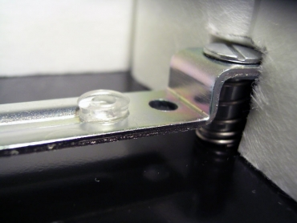
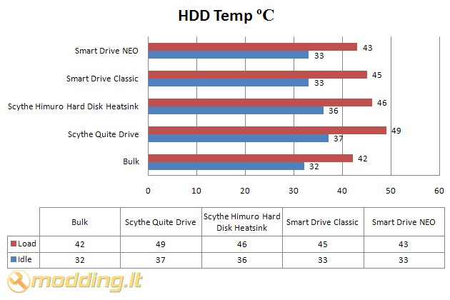

Grow UP Japan Smart Drive Neo
 Pristatau jums neseniai aprašytojo Smart Drive Classic vyresnijį brolį
GPU Smart Drive NEO. Tai naujausias Grow Up Japan kompanijos gaminys, kuriam suteikiama net 3 metų garantija. Šis gaminys tik išoriškai primena savo jaunėlį broliuką. Įtaiso vidus visiškai kituos, nors pagrindinė idėja ta pati: Smart Drive NEO tai visiškai uždaras (beveik hermetiškas) namukas kompiuterio kietajam diskui, užtikrinantis pakankamą disko aušinimą ir aukštą skleidžiamo garso izoliaciją.
Pristatau jums neseniai aprašytojo Smart Drive Classic vyresnijį brolį
GPU Smart Drive NEO. Tai naujausias Grow Up Japan kompanijos gaminys, kuriam suteikiama net 3 metų garantija. Šis gaminys tik išoriškai primena savo jaunėlį broliuką. Įtaiso vidus visiškai kituos, nors pagrindinė idėja ta pati: Smart Drive NEO tai visiškai uždaras (beveik hermetiškas) namukas kompiuterio kietajam diskui, užtikrinantis pakankamą disko aušinimą ir aukštą skleidžiamo garso izoliaciją. Žvilgsnis iš arčiau
Kaip matote, dėžutės dizaine dominuoja balta spalva. Ant dėžutės beveik visi užrašai pateikti japonų kalba. Dėžutės viduryje, apačioje išdidus žalias RoHS Compilance lapukas, reiškiantis, kad gaminio gaminime nebuvo panaudotas švinas. Kitoje dėžutės pusėje nepavaizduota nieko. Ant šonų - kompanijos rekvizitai ir techniniai įrenginio parametrai (spėju) japonų kalba.
Štai ką radau dėžutėje:
- Grow Up Japan Smart Drive NEO.
- 4 varžtelius, skirtus tvirtinti įrenginį PC korpuso viduje.
- 8 varžtelius, skirtus hermetiškai užsukti įrenginio viršutinį dangtelį.
- Šilumai laidžia tarpinę (lengvai karpomą).
- Montavimo instrukciją anglų ir japonų kalbomis.
Kaip matote, aušintuvo korpusas glotnus, jokių išsikišusių detalių. Aušintuvo korpusas yra visiškai uždaras. Aušintuvo dangtelio šonai yra padengti gumine tarpine, kuri hermetiškai uždaro korpusą, susukus visus 6 specialius tvirtinimo varžtelius. Pats dangtelis, kaip visas įrenginys, yra labai masyvus. Jis pagamintas iš 1,6 mm storio plieno lakšto ir sveria 620 g. Dėl tokios didelės masės, dangtelis prisispaudžia itin sandariai. Gamintojas garantuoja, kad tvarkingai surinktas įrenginys yra visiškai atsparus vandeniui ir dulkėms. Net neprisukus tvirtinimo varžtelių, jis puikiai uždaro korpusą ir nepraleidžia jokio garselio.
SATA duomenų ir maitinimo jungtys yra išvestos ir įrenginio išorę gamintojo įdiegtu jungčių ilgikliu. Tai tikrai patogus sprendimas, nes jis labai palengvina HDD montavimą. Ypač dėl to, kad Smart Drive Neo diską reikia montuoti aukštyn kojomis.
Korpuso vidinis perimetras yra padengtas garsą sugeriančia medžiaga. Ši medžiaga yra visiškai kitokia, nei Smart Drive Classic. Jos ir sluoksnis plonesnis, tačiau efektyvumas tikrai ne ką mažesnis.
Didžiausiais Smart Drive Neo skirtumas nuo Smart Drive Classic yra įmontuoti kietojo disko amortizatoriai. Tai paprasti metaliniai strypeliai, minkštai gulintys ant spūdžių spyruoklių. Ant kiekvieno strypelio yra po du amortizuojančius guminius žiedelius, ant kurių gula kietasis diskas. Šie žiedeliai yra pagaminti iš elastingos ir ilgaamžės gumą primenančios medžiagos, kuri gerai sugeria disko skleidžiamas vibracijas. Gamintojas teigia, kad šios tarpinės yra ilgaamžės ir atsparios temperatūriniam poveikiui. Kaip jau minėjau, diskas yra guldomas kojom (kontroleriu) aukštyn. Sumontavus diską normalioje padėtyje, šie amortizuojantys žiedeliai gali nieko ir nepadėti.
Disko montavimas įrenginyje yra labai paprastas. Tiesiog reikia prijungti diską prie vidinės SATA jungties. Apversti diską aukštyn kojomis ir švelniai paguldyti ant vidinių amortizatorių. Nepamiškite termo laidžio tarpinės. Ji yra lengvai karpoma, todėl ją galima padalinti į kelias dalis ir priklijuoti prie visų HDD kontrolerių. Ši tarpinė ne tik leidžia efektyviau pernešti disko kleidžiamą šilumą į aušintuvo išorę, bet ir šiek tiek slopina vibracijų perėjimą. Sumontavę diską, užsukite Smart Drive NEO dangtelį komplekte pridėtais varžteliais.
Techniniai įrenginio parametrai
- Modelio: Smart Drive Classic
- Dydis: 180 x 145 x 40 mm
- Svoris: 1500 g
- Spalva: Juoda
- Sąsaja: SATA
- HDD formatas: 3.5"
- Įrenginio formatas: 5.25"
- Antivibraciniai amortizatoriai.
- Įrengta garsą sugerianti medžiaga.
- Atsparumas dulkėms ir vandeniui.
- Storas viršutinis dangtelis, kuris dar labiau sumažina disko skleidžiamas vibracijas.
- Gali dirbti su SATA ir SAS diskais, kurių greitis <15000 RPM.
- Išskirtinio dizaino dangtelio tvirtinimo varžteliai, išniviliuojantys dangtelį taip, kad jis vienodai stipriai prispaustų HDD, esantį įrenginio viduje. Taip yra užtikrinama tai, kad diskas bus įmontuotas stabiliai ir bus panaikinti nemalonus rezonansiniai burzgimo garsai.
- Lanksti karpoma termo laidi tarpinė, užtikrinanti gerą šilumos parnešą iš kietojo disko į aušintuvo - tildytuvo išorę.
Testavimas
Štai mano PC konfigūracija:- Mainboard - DFI Infinity NFII Ultra
- CPU - AMD AlthonXP 2500+ @ 1837mhz
- CPU Cooler - AC Coper Silent 2L
- RAM - PQI DDR 1024 Mb 167Mhz
- HDD - WD 320 GB 7200rpm + 500 GB 7200rpm SATA
- Video - ATI Radeon 7500 64 MB VIVO
- DVD+/-RW - LiteON DVD+/-RW 8x4x8x12x SOHW-812S
- PSU -ACC 350w
- OS - XP SP3
Kaip buvo testuota:
Idle:
Kompiuteris, dirbantis „tuščia eiga“, buvo paliekamas geram
pusvalandžiui. Šio režimo metu veikė tik kasdieninės programos, nebuvo
veikiama nieko ypatingo.
Load:
Testo metu, buvo kopijuojami duomenys iš vieno disko į kitą. Duomenų
paketą sudarė įvairaus dydžio failai, nuo 100 kB iki 1,42 GB. Bendras
duomenų kiekis buvo ~30 Gb. Norint tikrai pasiekti disko disko
virštemperaturį (šilimo kreivės tašką, po kurio diskas daugiau
nebekaista, o visa parazitinė šiluma yra išspinduliuojama į aplinką),
po duomenų kopijavimo buvo paleistas disko defragmentavimas "Deep
Defragment" režimu.
Triukšmo slopinimo tyrimui buvo panaudotas zirziantis Seagate Barracuda 7200.10 250 Gb SATA diskas. Sumontavus diską į Smart Drive NEO aušintuvą, disko skleidžiamas garsas dingo. Nesumontuoto disko, gulinčio ant stalo, skleidžiamas garsas buvo girdimas ~20 cm atstumu. Sumontavus diską, disko skleidžiamą garsą buvo galima išgirsti tik visai prisikišus prie Smart Drive Classis aušintuvo, t.y. prispaudus ausį prie pačio Smart Drive NEO. Rezultatas ženklus!
Keista, bet Smart Drive NEO disko skleidžiamos vibracijas slopina ne taip jau gerai, kaip būtų galima tikėtis. Keista, bet vibracijos persiduoda į aušintuvo-tildytuvo išorę ir pereina į kompiuterio korpusą. Žinoma, jų stipris yra tikrai mažesnis nei paprastai sumontuoto disko, bet vis tiek juntamas. Gamintojas galėjo pridėti kokias nors gumines tarpines įrenginio tvirtinimo varžtams arba įrengti tvirtinimo auseles, kaip kad inžinieriai padarė Scythe Quiet Drive HDD tildytuve. Taip HDD skleidžiamos vibracijos tikrai nepereitų į kompiuterio korpusą.

Pro et Contra
Pliusai:- pakenčiamai aušina
- labai gerai slopina HDD triukšmą
- sandari įrenginio konstrukcija, apsauganti HDD nuo aplinkos poveikio
- gali dirbti su diskais, kurių greitis <15000 RPM
- pridėta lanksti karpoma termo laidi tarpinė, užtikrinanti gerą šilumos parnešą iš kietojo disko į aušintuvo - tildytuvo išorę
- nepakankamai gerai slopina HDD vibracijas
- kaina (~200 Lt)
 GPU Smart Drive NEO yra tikrai puikus įrenginys. HDD skleidžiamo garso nebesigirdi iš vis. Gaila tik, kad Smart Drive NEO nepakankamai gerai slopina HDD vibracijas. Tai gan keista, nes įrenginys kurtas būtent tam. Gal aš per daug priekabus, bet man norisi, kad paėmus Smart Drive NEO į ranką vibracijos nesijaustų. O dabar jos juntamos, tik kiek silpnesnės nei "pliko" disko, ar disko, sumontuot į Smart Drive Classic. Manau, čia kalta kietojo disko pakaba, kuri diską prispaudžia prie įrenginio dangtelio. Kaina irgi šiek tiek kandžiojasi. Tik tikras tylos maniakas galėtų leisti sau tokią sumą, na bet ištampytų nervų gydimas kainuotų brangiau. Susumavus mano postringavimus ir pastebėjimus, suteikiu
GPU Smart Drive NEO 9,5 balus iš
10 galimų, kas atitinka 5 modding.lt rakčiukus.
GPU Smart Drive NEO yra tikrai puikus įrenginys. HDD skleidžiamo garso nebesigirdi iš vis. Gaila tik, kad Smart Drive NEO nepakankamai gerai slopina HDD vibracijas. Tai gan keista, nes įrenginys kurtas būtent tam. Gal aš per daug priekabus, bet man norisi, kad paėmus Smart Drive NEO į ranką vibracijos nesijaustų. O dabar jos juntamos, tik kiek silpnesnės nei "pliko" disko, ar disko, sumontuot į Smart Drive Classic. Manau, čia kalta kietojo disko pakaba, kuri diską prispaudžia prie įrenginio dangtelio. Kaina irgi šiek tiek kandžiojasi. Tik tikras tylos maniakas galėtų leisti sau tokią sumą, na bet ištampytų nervų gydimas kainuotų brangiau. Susumavus mano postringavimus ir pastebėjimus, suteikiu
GPU Smart Drive NEO 9,5 balus iš
10 galimų, kas atitinka 5 modding.lt rakčiukus.
Modding.lt komanda dėkoja Hiroki Iida iš www.gup.co.jp už apžvalgai suteiktą produktą.
Jei norėsite pakomentuoti mano straipsnį arba pareikšti savo nuomonę, apsilankykite Modding.lt forume.


{kind=link}
{kind=link}
{kind=link}
{kind=link}
{kind=link}
{kind=link}
{kind=link}
{kind=link}
{kind=link}
{kind=link}
{kind=link}